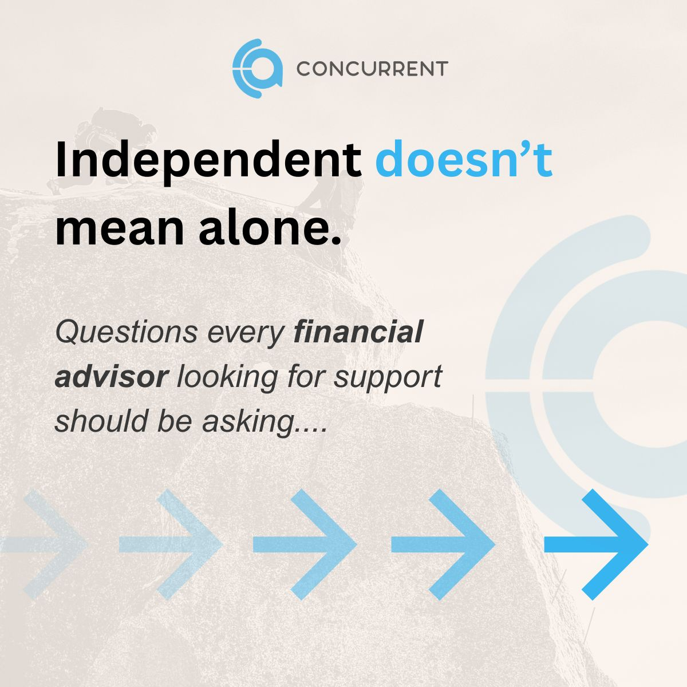
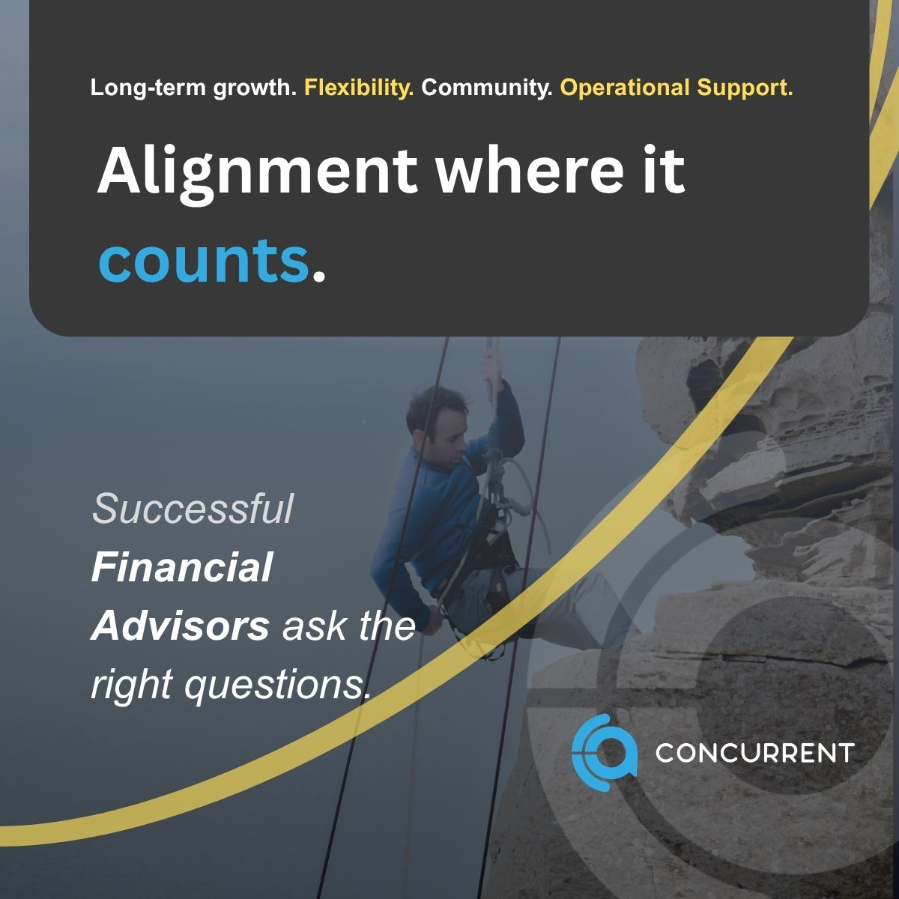

EMAIL 01
MESSAGE
Hi Tom,
Thank you for filling out the form. Here are the 7 Questions that help advisors evaluate their support options with clarity.
7 Questions to Evaluate Independence
At Concurrent, we focus on long-term success for business owners. A strong start begins with knowing where your systems stand today. Are they adding value, or are you still in the middle of finding the right support?
I would be interested to hear what stood out to you as you looked through the questions. What part of your business do you think deserves the most attention right now?
Best,
Gleimi De Jesus
Business Development Officer
Concurrent Investment Advisors
Gleimi.Dejesus@poweredbyconcurrent.com
813.575.2652
You did not become independent only to advise clients. You became independent to own a business.
Autonomy matters. Control matters. Alignment matters.
Independence does not mean isolation. The right support model protects your ownership, strengthens your systems, and gives you the freedom to focus on clients.
Finding that support starts with asking the right questions.
Start with seven:
https://poweredbyconcurrent.com/blog/the-7-questions-to-help-you-evaluate-independence/

Financial advisors, alignment is not a feeling. It is a business decision.
Alignment means your support model matches your values, your ownership goals, and the way you want to serve clients.
If you are evaluating independence or already independent, the real question is simple. Does your current structure support the business you are building?
We created seven questions that help you find clarity. They will not tell you what to choose. They will help you choose what is right for you.
And the best fit might not be us. You deserve to know who it is.
Start here:
https://poweredbyconcurrent.com/blog/the-7-questions-to-help-you-evaluate-independence/
